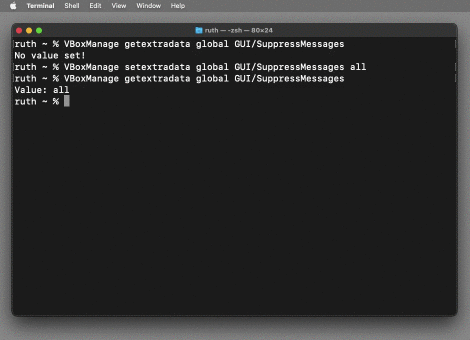
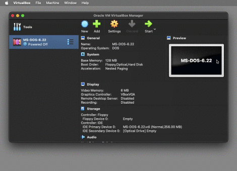
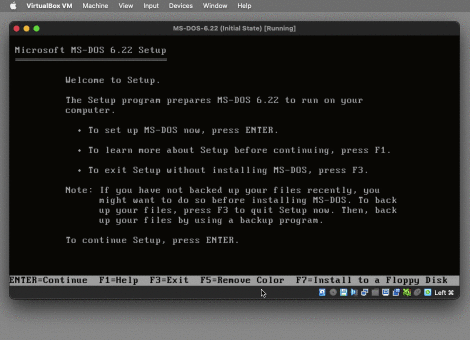
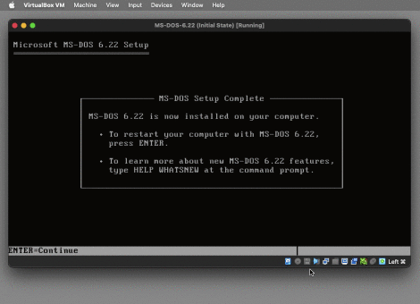

1994's MS-DOS 6.22 was the last standalone version of DOS released by Microsoft. It's the foundation for Windows 3.11, the last 16-bit version of Windows.
VirtualBox is free to download and use. MS-DOS 6.22 can be considered abandonware - Microsoft stopped supporting it at the end of 2001.
This how-to guide is targeted at macOS Monterey on an Intel MacBook. Other recent macOS versions should work very similarly.
If you're on Linux, Solaris or Windows, just ignore the Mac-specific parts of this guide. The VirtualBox parts should be much the same on all platforms.
I. Install VirtualBox
Download VirtualBox 7.0 or later from virtualbox.org - about 130 MB
Double-click the downloaded 'VirtualBox-7.0.8-156879-OSX.dmg'
Double-click 'VirtualBox.pkg' in the window which pops up
Click 'Continue' -> click 'Install'
Enter your Mac's password -> click 'Install Software'
Wait for 'The installation was successful' -> click 'Close'
'Do you want ...' -> click 'Keep', you may need 'VirtualBox_Uninstall.tool'
Command-W to close the 'VirtualBox' window
Eject the 'VirtualBox' volume
UNINSTALLING: If you need to uninstall VirtualBox, double-clicking the 'VirtualBox_Uninstall.tool' just shows a popup saying '...Apple cannot check it for malicious software'. Instead of double-clicking, Control-click 'VirtualBox_Uninstall.tool' -> click 'Open', which shows a similar popup but this time with an 'Open' button. Also note that after 'VirtualBox_Uninstall.tool' finishes running, you may still need to delete:
II. Optionally, hide VirtualBox 7's 'Notification Center' overlay

Using Terminal to hide VirtualBox 7's 'Notification Center' overlay.
Watch the screencast:
MP4 (recommended) or
animated GIF
VirtualBox 7 often shows a 'Notification Center', overlaying the right side of the virtual machine's window. Here's a slightly hacky way to prevent it from appearing:
In the Finder, Command-Shift-U, to open the 'Utilities' folder
Start typing 'ter...' to find the 'Terminal' utility -> Command-O to open it
Type VBoxManage getextradata global GUI/SuppressMessages and Return
You should see No value set!. This confirms that VBoxManage exists, and shows that the following step has not already been done.
Type VBoxManage setextradata global GUI/SuppressMessages all and Return
Press the UpArrow key twice to show VBoxManage getextradata ... and Return
This time you should see Value: all, confirming that setextradata worked
Command-Q to quit Terminal -> Command-W to close the 'Utilities' window
RESETTING: If you want to get the 'Notification Center' messages back, again, VBoxManage setextradata global GUI/SuppressMessages should leave you with No value set! again.
VirtualBox 7 has a second 'Notification Center', which overlays the right side of the 'VirtualBox Manager'. There doesn't currently seem to be a way to keep it hidden, but luckily it rarely gets in the way.
III. Create a new MS-DOS virtual machine in 'Guided Mode'

Details of a VirtualBox 7 MS-DOS instance, before installation.
Watch the screencast:
MP4 (recommended) or
animated GIF
In the Finder, Command-Shift-H to open your home folder in a new window
Assuming this is the first time you've used VirtualBox, you should see there is currently no 'VirtualBox VMs' folder
Command-Shift-A to open the 'Applications' folder
Start typing 'virt...' to find the 'VirtualBox' app -> Command-O to open it
You should see the 'Oracle VM VirtualBox Manager' window
Click the 'New' icon
Name: MS-DOS-6.22
Folder: [keep the default, '/Users/<your-username>/VirtualBox VMs']
ISO Image: <not selected> [the default]
Type: Other [selected automatically when you type 'MS-DOS' in the Name]
Version: DOS [selected automatically when you type 'MS-DOS' in the Name]
Click 'Next'
Base Memory: 128 MB -> Processors: 1 -> click 'Next'
Under 'Create a Virtual Hard Disk Now', Disk Size: 256.00 MB -> click 'Next'
Click 'Finish' - you should see 'MS-DOS-6.22 Powered Off' in the sidebar
Command-Q to quit VirtualBox
Command-Tab to the 'Finder' -> Command-Shift-H to open your home folder
Double-click the new 'VirtualBox VMs' folder
You should see it contains just one item, the 'MS-DOS-6.22' folder
Double-click the 'MS-DOS-6.22' folder - you should see three files:
MS-DOS-6.22.vbox (2 KB)
MS-DOS-6.22.vbox-prev (1 KB)
MS-DOS-6.22.vdi (2.1 MB)
Command-W to close the Finder window
HOT TIP: When naming a new virtual machine, only use digits 0-9, uppercase and lowercase letters A-Z and a-z, hyphens '-', dots '.' and underscores '_'. VirtualBox will use the virtual machine name as a filename, and characters outside the range [-._0-9A-Za-z], can cause headaches later on. The space character ' ' is especially bad.
IV. Create an initial Open Virtualization Format (.ova) archive
The compressed 'ms-dos-6.22-initial-state.ova.zip' file is only 3 KB.
Watch the screencast:
MP4 (recommended) or
animated GIF
It would be possible to archive the 'MS-DOS-6.22' folder by creating a .zip file from it. That wouldn't be very portable solution though, so VirtualBox prefers you to create a .ova file instead.
Command-Tab to the 'Finder' -> Command-Shift-A -> type 'virt' to find the 'VirtualBox' app -> Command-O to open it
Click the menu icon to the right of 'MS-DOS-6.22' -> click 'Snapshots'
You should just see 'Current State' -> double-click it to show its properties
Under 'Attributes' -> Name: Initial State
Description: Before starting up for the first time. -> click 'Take'
You should see 'Initial State' in the snapshots list, with 'Current State' nested underneath
Note that the compressed .zip file is tiny - only about 3 KB. Compression works really well in this case, because the virtual machine is currently empty. Your .zip archive files will be much bigger later, when the VM contains actual software and content.
Command-W to close the Finder window
Back up the 'ms-dos-6.22-initial-state.ova.zip' file
DOWNLOAD: The 'ms-dos-6.22-initial-state.ova.zip' archive is available here.
V. Grab your assets!
In the 'VirtualBox VMs' folder, Command-Shift-N to create a new folder
Command-Shift-N -> type 'MS-DOS-6.22-Assets' -> press the Return key
Download the .7z file to your new 'MS-DOS-6.22-Assets' folder
Double-click the .7z file to unzip it into a new folder
You should see the 'Microsoft MS-DOS 6.22 Plus Enhanced Tools (3.5)' folder
Double-click that folder - you should see nine files, all dated late 2014:
Disk1.img (1.5 MB)
Disk1.jpg (108 KB)
Disk2.img (1.5 MB)
Disk2.jpg (106 KB)
Disk3.img (1.5 MB)
Disk3.jpg (105 KB)
Microsoft MS-DOS 6.22 Plus Enhanced Tools (3.5).txt (233 B)
Suppdisk.img (1.5 MB)
winworldpc.com.txt (691 B)
VI. Get to the 'Microsoft MS-DOS 6.22 Setup' screen

The MS-DOS 6.22 Setup screen, after pressing F5 to turn the background black.
Watch the screencast:
MP4 (recommended) or
animated GIF
FUNCTION KEYS: MS-DOS and Windows software often uses function keys, F1 to F12. If you're using a Mac, you'll need to press the Fn modifier key at the same time to make these function keys work. If that's slowing you down, tick the 'Use F1, F2, etc. keys as standard function keys' checkbox in 'System Preferences' -> 'Keyboard'.
Command-Tab to the 'Finder' -> Command-Shift-A -> type 'virt' to find the 'VirtualBox' app -> Command-O to open it
If not already selected, click once on 'MS-DOS-6.22' to select it
Click its 'Settings' icon -> Storage
Under 'Controller: Floppy', click 'Empty'
Under 'Attributes', click the small floppy disk icon on the right
Click 'Choose a disk file...'
For any popups like '“VirtualBox” would ... folder.', click 'Don’t Allow'
Select 'Disk1.img' from the folder of unzipped .7z files -> click 'Open'
You should see 'Empty' has changed to 'Disk1.img' -> click 'OK'
Note that 'Disk1' is a boot disk. VirtualBox has already created an appropriate BIOS on the virtual machine, and it expects a boot disk to be inserted when it powers up.
Double-click the Powered Off 'MS-DOS-6.22' in the sidebar, to start it running
You should see a white on blue page headed 'Microsoft MS-DOS 6.22 Setup'
At the top of your screen, 'View' -> 'Virtual Screen 1' -> 'Scale to 125%'
Press F5 to turn the background black. This is less painful on the eyes, and also confirms that VirtualBox's keyboard-capturing is working.
Click on the MS-DOS window - your mouse pointer will actually disappear, because MS-DOS is text only!
If 'You have clicked ...' appears, tick 'Do not show...' -> click 'Capture'
By default, the 'host key' is the Left Command key. Press it now to check that you can get your mouse cursor back.
HOT TIP: VirtualBox virtual machines run as their own individual application, named 'VirtualBox VM'. You could actually quit the 'VirtualBox Manager' app, and all your virtual machines would continue running.
VII. Install MS-DOS 6.22 from the virtual floppy-disks

The MS-DOS 6.22 Setup screen, after completing the installation, and before restarting.
Watch the screencast:
MP4 (recommended) or
animated GIF
The 'Microsoft MS-DOS 6.22 Setup' screen should be saying 'press ENTER'
Press the Return key. Some keyboards have an Enter key in addition to a Return key, and some apps treat them differently. But in this context, the MS-DOS virtual machine treats a Return-press the same as an Enter-press.
Keep 'Configure unallocated disk space (recommended)' selected
Press the Return key again
Step VI.9. above inserted 'Setup Disk 1' into drive A, so press Return
Wait for 'Formatting drive C' to complete (about 30 seconds)
Optionally, edit 'Date/Time', 'Country' or 'Keyboard Layout' -> press Return
Accept the default 'C:\DOS' by pressing Return
Wait for 'Please insert ... Setup Disk #2' to appear (about 30 seconds)
Press the 'host key' to get your mouse cursor back
Click the small floppy disk icon in the row of icons under the VM window
Click 'Choose a disk file...'
For any popups like '“Terminal” would like ... folder.', click 'Don’t Allow'
Select 'Disk2.img' from the folder of unzipped .7z files -> click 'Open'
Press Return -> wait for 'Please ... Setup Disk #3' to appear (~30 seconds)
This time, choose 'Disk3.img' -> click 'Open'
Press Return -> wait for 'Remove disks ...' to appear (~30 seconds)
Click the floppy disk icon again -> click 'Remove disk from virtual drive'
Press Return -> you should see a 'MS-DOS Setup Complete' message
Press Return
VIII. Deal with an unresponsive restart
This fix can be used if, after a restart, you see these two lines: ata0 master: VBOX HARDDISK ATA-6 Hard-Disk (256 MBytes) ata1 master: VBOX CD-ROM ATAPI-6 CD-ROM/DVD-ROM
Although you can see a blinking cursor, the keyboard is be unresponsive, so press the 'host key'
At the top of your computer's screen, click 'Machine' -> 'Reset (Host-R)'
On a 'Do you really ...' popup -> tick 'Do not show...' -> click 'Reset'
You should see the following line below ata1 master: ...: iPXE (http://ipxe.org) E2:00.0 E2001.10 E200
At the top left corner, click 'VirtualBox VM' -> 'Quit VirtualBox VM'
On the 'You want to:' popup -> click 'Power off the machine' -> click 'OK'
Command-Tab one or more times, to the go to 'VirtualBox'
You should see 'MS-DOS 6.22 Powered Off' selected in the sidebar
Double-click the Powered Off 'MS-DOS-6.22' in the sidebar, to start it running
IX. Create an .ova archive after the first successful restart
MS-DOS's MSD utility, after pressing 'O' to show operating system details.
Watch the screencast:
MP4 (recommended) or
animated GIF
You should see:
Starting MS-DOS...
HIMEM is testing extended memory...done.
C:\>C:\DOS\SMARTDRV.EXE /X
C:\>
Type MSD at the prompt to open Microsoft Diagnostics. This confirms that MD-DOS is working. MS-DOS commands are not case sensitive, so msd works the same as MSD.
Press O -> you should see Operating System: MS-DOS 6.22 -> F3 to exit
Press HostKey-T to take a snapshot
Snapshot Name: After First Restart
Snapshot Description: A plain installation of MS-DOS-6.22, with no custom drivers or other software. -> click 'Ok'
HostKey-Q -> choose 'Power off the machine' -> tick 'Restore current snapshot ‘After First Restart’' -> click 'OK'
In VirtualBox Manager, you should see 'Saved' under 'MS-DOS 6.22'
Click 'Current State' to select it -> click the 'Discard' icon
{kind=link}
{kind=link}


{kind=link}
{kind=link}
{kind=link}
{kind=link}